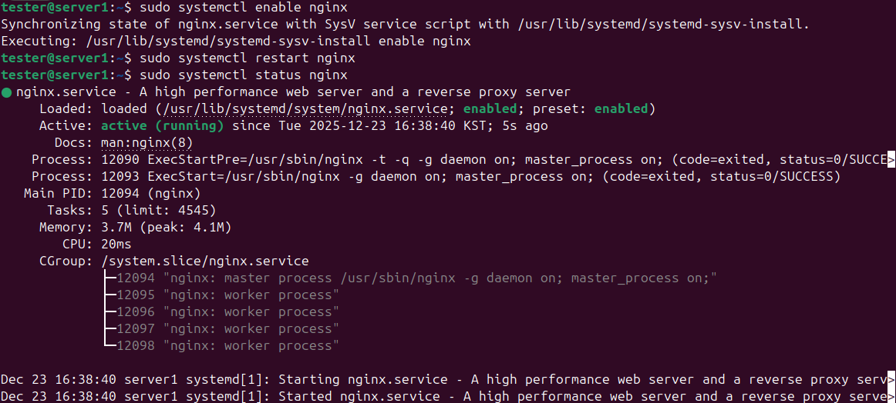

리눅스는 무료 오픈소스이며, 높은 보안성과 안정성, 뛰어난 성능과 유연성을 제공해 서버 OS로 적합하다. 또한 재부팅 없는 업데이트, 효율적인 자원 관리, 빠른 버그 수정, 다양한 환경 지원, 클라우드·DevOps와의 높은 호환성이 큰 장점이다.
서버를 배우기 전에 포트의 개념을 알 필요가 있다.
즉, 서버 = IP + 포트 + 프로세스
사용자가 브라우저에 주소를 입력하면 그 요청을 받아서 응답을 보내줄 서버가 필요하다. 그 역할을 하는 것이 웹 서버다. 네트워크가 연결되고 IP 주소를 알아도 웹사이트 서버가 없으면 사용자는 요청을 보내도 응답을 받을 수 없다.
Apache HTTP Server, Nginx, Lighttpd 등이 있다.
sudo apt install -y nginx
systemctl enable nginx systemctl restart nginx systemctl status nginx
위 명령어를 차례대로 실행한 후
active (running) 상태를 확인한다.
리눅스 파이어폭스 접속 후 주소창에 localhost를 입력한다.
welcome to nginx!가 뜨면 정상이다.
localhost는 현재 사용 중인 자기 자신의 컴퓨터를 가리키는 이름이다.
실제로는 IP 주소 127.0.0.1을 의미하며,
외부 네트워크를 거치지 않고 내 컴퓨터에서 실행 중인 서버를 확인할 때 사용한다.
리눅스 터미널에서 systemctl stop nginx를 실행한다.

웹 서버를 꺼버리면 웹 페이지에 아무것도 표시되지 않는다.
sudo ss -tulpn | grep nginx
ss 명령어는 현재 열려 있는 포트와 해당 포트를 사용하는 프로세스를 확인할 수 있다.
프로세스 정보는 관리자 권한이 필요하므로 sudo를 사용한다.

포트 번호가 80번인걸 확인할 수 있다.
지금까지 nginx를 통해 웹 서버가 프로세스로 실행되고, 포트를 열어 요청을 처리한다는 것을 확인했다. 이 구조는 다른 모든 서버에서도 동일하게 적용된다.
DNS는 이름을 IP 주소로 바꿔주는 서버다. 사람은 숫자(IP 주소)보다 이름을 쓰기 때문에 브라우저에서 도메인 이름을 입력하면, DNS 서버가 해당 이름에 대응하는 IP 주소를 알려준다. DNS가 없으면 IP 주소를 외워서 접속해야한다. 기본 포트는 53번이다.
sudo apt install -y bind9
sudo systemctl status bind9

active(running) 상태 확인.
sudo systemctl enable bind9 sudo systemctl restart bind9 sudo systemctl status bind9
sudo vim /etc/hosts
127.0.0.1 linux-project.local 추가

주소창을 보면 설정한 linux-project.local로 접속한걸 알 수 있다.
DHCP 서버는 클라이언트에게 IP 주소를 자동으로 할당해주는 서버이다.
기본 포트는 67번(서버) / 68번(클라이언트)을 사용한다.
sudo apt install isc-dhcp-server
sudo vim /etc/default/isc-dhcp-server

INTERFACESv4="ens33"로 수정한다. (DHCP 서버가 동작할 네트워크 인터페이스 지정)
ls /etc/netplan 명령어로 설정 파일을 확인한다.
sudo vim /etc/netplan/01-network-manager-all.yaml

화면과 같이 수정하여 DHCP 서버에 고정 IP를 설정한다.
sudo netplan apply 명령어로 적용한다.
DHCP 설정 파일을 작성한다.
sudo vim /etc/dhcp/dhcpd.conf

leases 파일을 생성한다.
sudo touch /var/lib/dhcp/dhcpd.leases
sudo chown root:root /var/lib/dhcp/dhcpd.leases
sudo chmod 644 /var/lib/dhcp/dhcpd.leases
설정 파일 문법을 최종 확인한다. (에러가 없어야 함)
sudo dhcpd -t -cf /etc/dhcp/dhcpd.conf
sudo systemctl restart isc-dhcp-server
sudo systemctl status isc-dhcp-server

VMware 환경에서 DHCP 서버(server1)가 클라이언트(serverb)에 IP를 할당하는지 확인한다.
server1(DHCP 서버)에서 로그 창을 실행한다.
sudo journalctl -u isc-dhcp-server -f

DHCPREQUEST 192.168.238.130 로그를 확인한다.
serverb(클라이언트 서버)에서 최종 IP 할당 여부를 확인한다.

IP 주소 192.168.238.130이 DHCP를 통해 할당된 것을 확인한다.
데이터베이스 서버는 데이터를 체계적으로 저장하고 관리하기 위한 서버이다. 본 실습에서는 리눅스 환경에서 MariaDB를 설치하여 기본적인 데이터베이스 구성과 데이터 조작을 진행한다.
sudo apt install -y mariadb-server
sudo systemctl status mariadb
서비스 상태가 Active: active (running) 인지 확인한다.

보안 설정 실행
sudo mysql_secure_installation
처음 나오는 비밀번호 입력 질문은 Enter를 입력하고, 이후 질문은 모두 Y로 설정한다. 중간에 root 비밀번호 설정 단계에서만 비밀번호를 주의하여 입력한다.
데이터베이스 생성
sudo mariadb
CREATE DATABASE testdb;
SHOW DATABASES;
SQL 명령어는 대문자로 작성하는 것이 관례이며, 각 명령어의 끝에는 반드시 세미콜론(;)을 붙인다.
사용자 생성 및 권한 부여
CREATE USER 'testuser'@'localhost' IDENTIFIED BY '1234';
GRANT ALL PRIVILEGES ON testdb.* TO 'testuser'@'localhost';
FLUSH PRIVILEGES;
mariadb -u testuser -p

testuser 계정으로 접속 후
USE testdb; 명령 실행 시 에러가 발생하지 않으면
정상적으로 권한이 부여된 것이다.
테이블 생성
contacts 테이블은 이름, 전화번호, 이메일 정보를 저장하기 위한 테이블이다. 각 컬럼의 의미는 다음과 같다.
id 컬럼은 각 데이터를 구분하기 위한 고유 식별자이며,
INT 타입으로 설정하였다.
AUTO_INCREMENT 옵션은 데이터가 추가될 때마다
값이 자동으로 증가하도록 하였다.
PRIMARY KEY는 테이블 내에서 중복될 수 없는 값이다.
name VARCHAR(50)는 이름을 저장하는 컬럼으로,
최대 50자의 문자열을 저장할 수 있다.
NOT NULL 옵션을 사용하여 반드시 값이 입력되도록 설정하였다.
phone VARCHAR(20)는 전화번호를 저장하는 컬럼이다.
전화번호에는 하이픈(-)이 포함될 수 있으므로
숫자형이 아닌 문자열 타입(VARCHAR)으로 설정하였다.
email VARCHAR(100)는 이메일 주소를 저장하는 컬럼이다.
VARCHAR는 가변 길이 문자열 타입으로, 실제 입력된 문자열 길이에 따라 저장 공간을 사용한다.
CREATE TABLE contacts (
id INT AUTO_INCREMENT PRIMARY KEY,
name VARCHAR(50) NOT NULL,
phone VARCHAR(20),
email VARCHAR(100)
);

SHOW TABLES;
테이블 생성 확인
데이터 삽입
INSERT INTO contacts (name, phone, email) VALUES
('홍길동', '010-1111-2222', 'hong@test.com'),
('김철수', '010-3333-4444', 'kim@test.com'),
('이영희', '010-5555-6666', 'lee@test.com');
데이터 조회 (SELECT)
SELECT * FROM contacts;

특정 데이터 조회
이름으로 조회
SELECT * FROM contacts WHERE name = '김철수';
이메일로 조회
SELECT * FROM contacts WHERE email = 'lee@test.com';
전화번호 일부로 조회
SELECT * FROM contacts WHERE phone LIKE '010-5555%';

특정 데이터 삭제 (DELETE)
DELETE 명령어는 WHERE 조건 없이 실행할 경우 테이블의 모든 데이터가 삭제되므로 주의해야 한다.
삭제 전 테이블 상태 확인
SELECT * FROM contacts;
이름으로 데이터 삭제
DELETE FROM contacts WHERE name = '김철수';
전화번호 일부로 데이터 삭제
DELETE FROM contacts WHERE phone LIKE '010-5555%';
삭제 결과 확인
SELECT * FROM contacts;

이상 리눅스 교육 자료 파트 종료